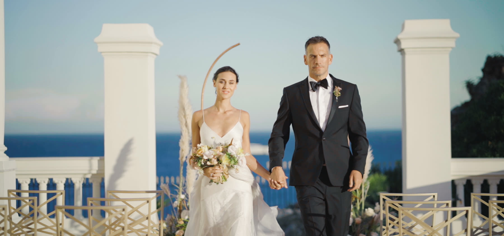
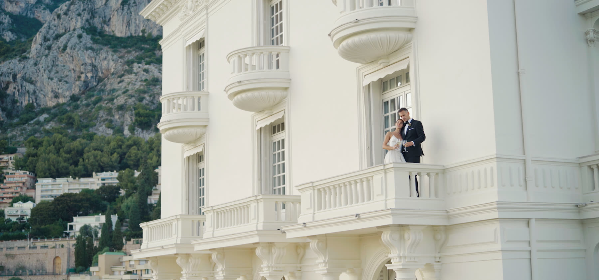
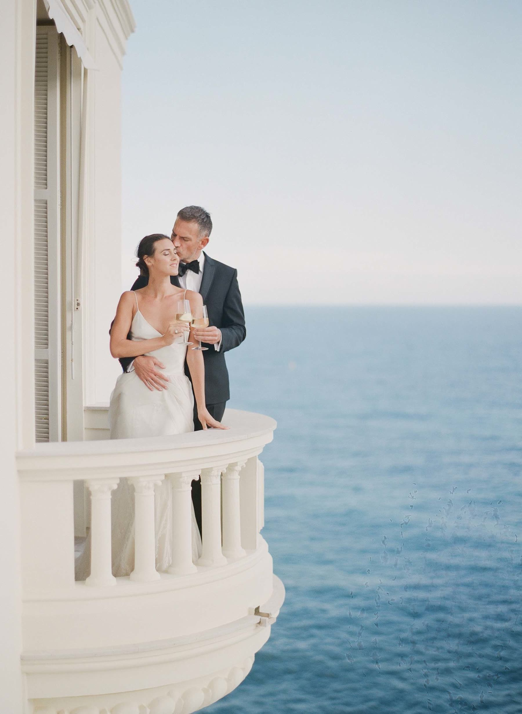
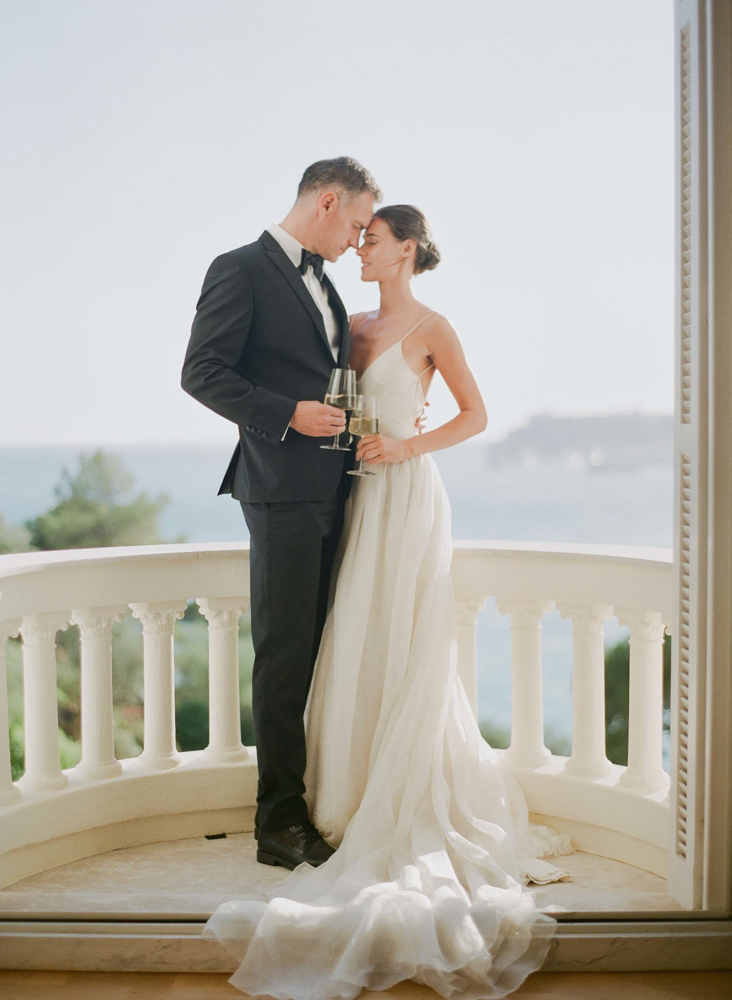
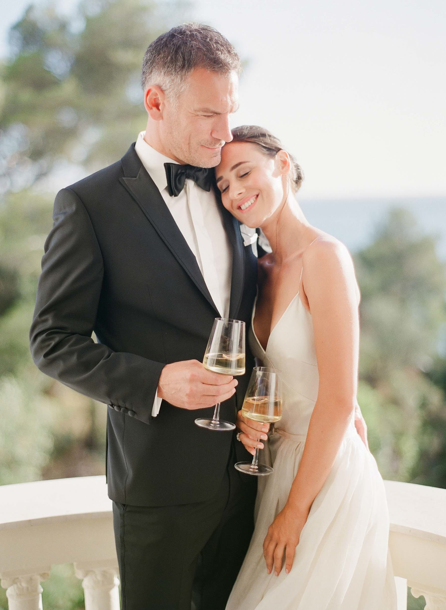
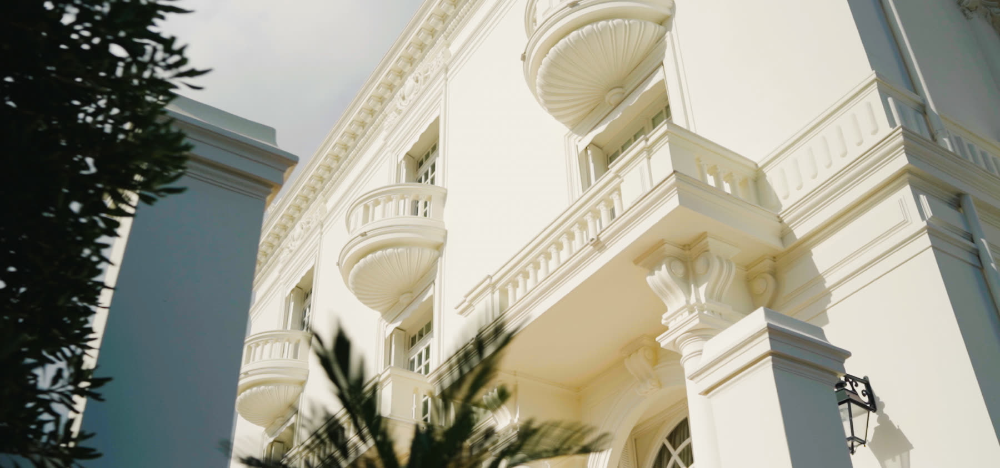
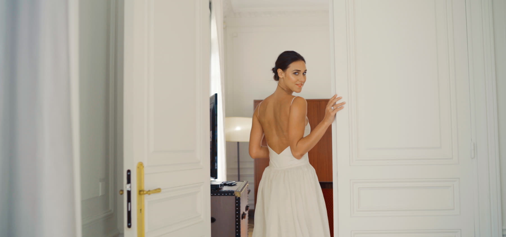
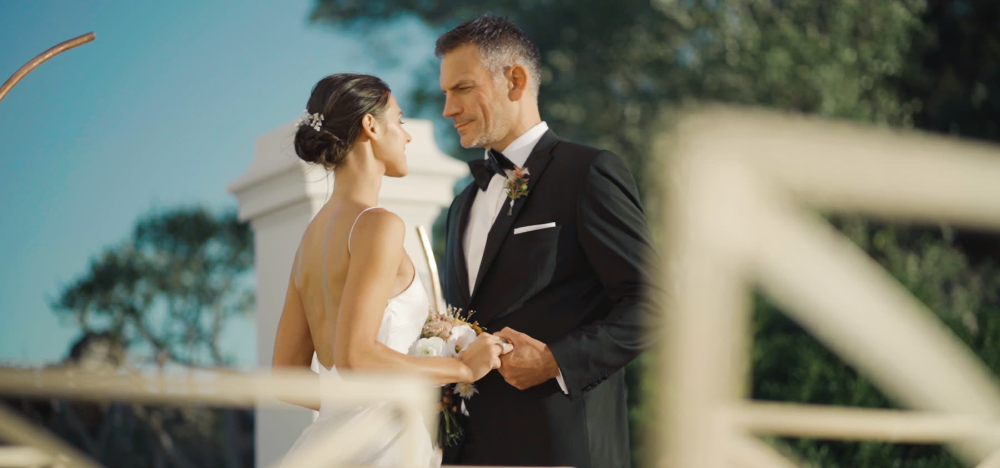
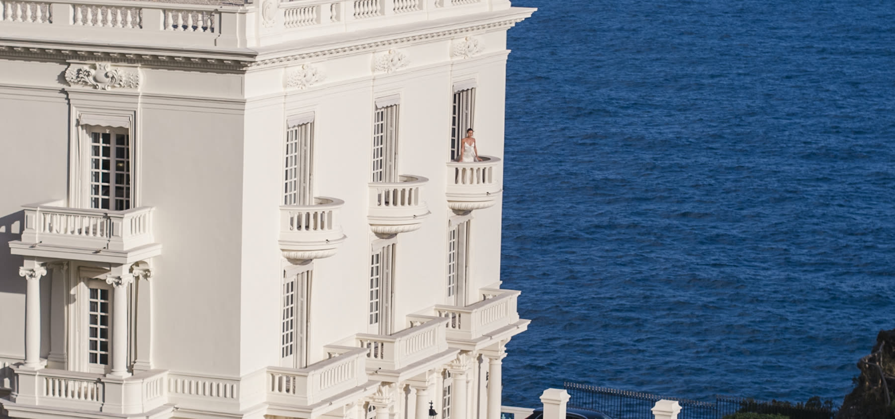

— Journal · Guide
Villa La Vigie takes its name quite literally. "La Vigie" means the lookout, and the mansion has held that role for over a century ... a private Belle Époque residence built into the cliffs above Monaco, where the aristocracy of the coast once raised villas to catch the first light off the Mediterranean and keep watch, quite literally, over the principality below. It belongs to the same golden era as the Riviera's grandest addresses, built when this stretch of coastline between Nice and the Italian border was the most fashionable in Europe.
What makes Villa La Vigie extraordinary today is how little of that history has been diluted. The mansion still reads as a private residence rather than a hotel ... curved stone balconies suspended directly over the water, shuttered windows, a silhouette that seems to grow straight out of the rock. For a couple who wants grandeur without a crowd, it is close to unmatched: an intimate guest list, vows exchanged with the whole of the Mediterranean as a backdrop, and an interior formal enough to carry a black-tie evening without a single rented chair.
Villa La Vigie is managed through the Société des Bains de Mer de Monaco (SBM), the institution behind the principality's most storied addresses, and we have a direct contact there. If you are seriously considering the villa for your own wedding, tell us and we will put you in touch with the SBM ourselves ... it is one of the advantages of having filmed on this coastline for as long as we have.
Mansions like this one are not being built anymore, and fewer of them survive intact with every wedding season that passes. Villa La Vigie is truly one of the last great jewels of the Riviera ... a private Belle Époque residence, perched above Monaco, with very few peers left standing.
Planning your own celebration? Explore our wedding films in the French Riviera, France and Europe.









— Begin Your Journey